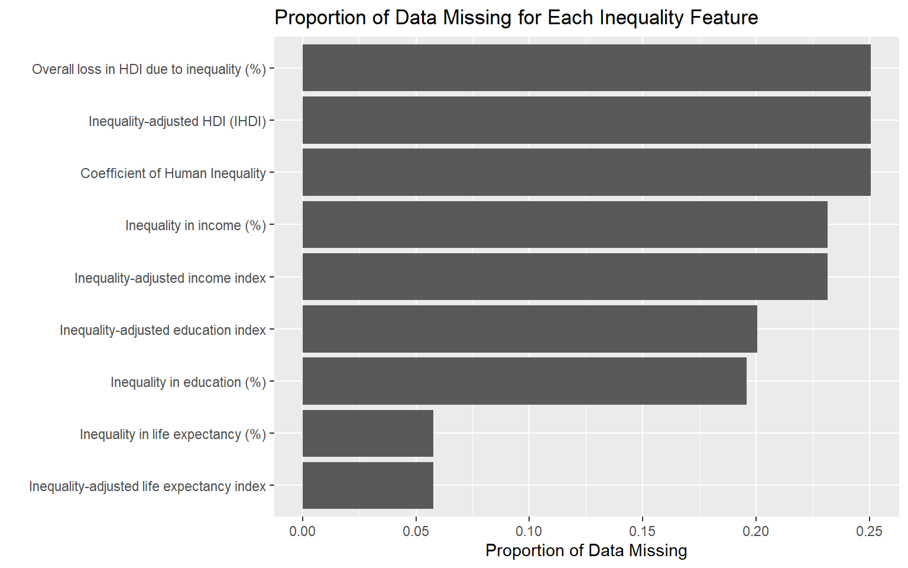
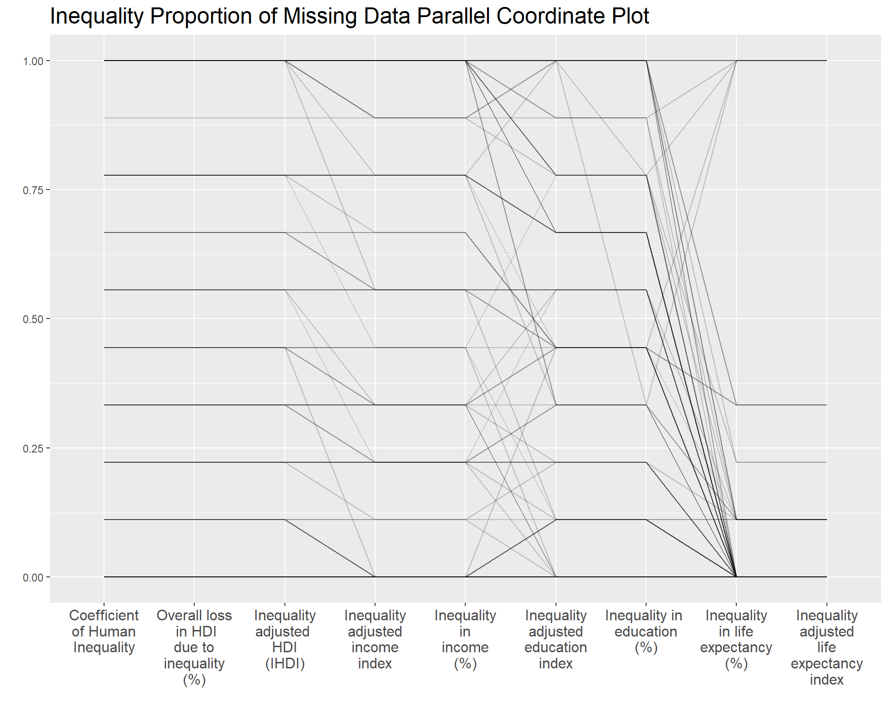
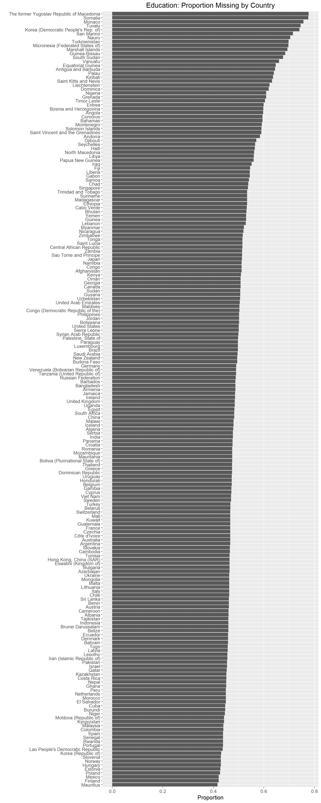
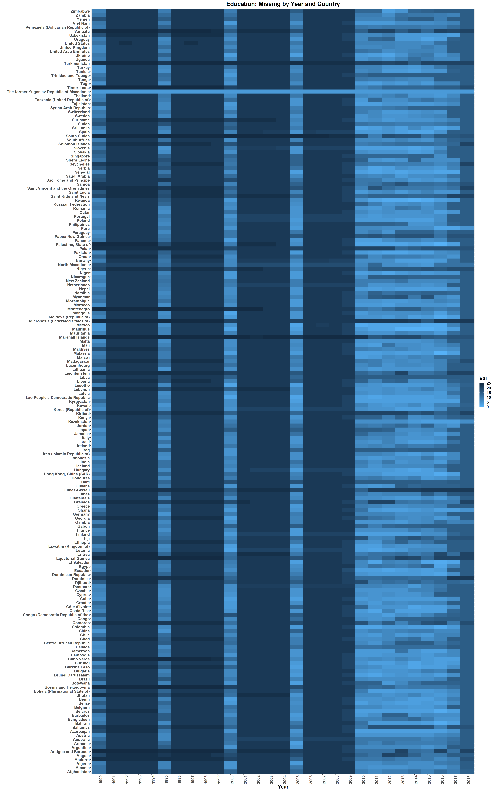

Chapter 4 Missing values
4.1 Inequality Missing Data
Below is a bar plot showing the count of missing data per feature.

The above shows that for 7 of the 9 Inequality features, 20-25% of entries are missing.
As Inequality data includes only 9 years and 9 features, a heatmap is an appropriate tool to visualize combinations of missing data between Year and the different Inequality features, with the goal of identifying trends in proportion of missing data for specific features across years (and vice-versa).

The above heatmap is drawn such that the feature with the largest proportion of missing data is at the bottom. From the heatmap, it seems 2011 and 2012 show the highest rates of missing data for every feature except Inequality in life expectancy (%) and Inequality-adjusted life expectancy index. However, note that the proportion of missing data peaks at around 0.3 and most feature-year combinations show a proportion of missing data below 0.2, which is manageable.
Below is the aggregate sum of number of missing entries over all features for each country, filtering only the countries with at least one missing entry.
100% of the data is missing for Saint Kitts and Nevis, Liechtenstein, and Dominica. In addition, more than 87.5% of the data is missing for Nauru, Marshall Islands, Andorra, and Tuvalu. All of these countries are extremely small (most are islands); it is possible that Inequality data is not collected nationally and/or data collection is not prioritized by the relevant international organizations.
Due to the large volume of countries, a heat map is not an effective way to visualize the relationships between proportion of missing data, countries, and features. Instead, a parallel coordinate plot was drawn to assess the presence of a relationship between features and proportion of missing data for different countries.

Most countries appear to not be missing data for Inequality-adjusted life expectancy index and Inequality in life expectancy (%), and when they do, both features are missing in similar proportions.
For remaining features, at intervals of around 0.1 from 0 to 1, there are clusters of countries missing that proportion of data for each feature.
There are a small number of countries missing data for most to all features (seen as a flat line at the top of the plot). These may be the smaller countries reflected in the bar chart above.
For Coefficient of Human Inequality, Overall Loss in HDI due to Inequality (%), and Inequality-Adjusted HDI (IHDI), countries generally miss the same proportion of data for all 3 features, suggesting they may be related.
In contrast, countries generally miss the same proportion of data in Inequality-Adjusted Income Index as in Inequality in Income (%), suggesting they may be related. In addition, countries are generally missing as much or less data for these features as they are for Coefficient of Human Inequality, Overall Loss in HDI due to Inequality (%), and Inequality-Adjusted HDI (IHDI).
For Inequality-Adjusted Education Index and Inequality in Education (%), countries generally miss the same proportion of data; again, they may be related.
4.2 Human Security Missing Data
The following abbreviations will be used for variables examined in this section:
Homicide Rate (per 100,000 people) - Homicide.Rate
Prison Population (per 100,000 people) - Prison.popn
Suicide Rate (Male) (per 100,000 people) - Suicide.rate.M
Suicide Rate (Female) (per 100,000 people) - Suicide.rate.F
A significant proportion of data in the Human Security dataset is missing. Largely, this seems to be a product of uneven tracking between variables and geographic complications.
The dataset shows uneven tracking between variables. For example, Homicide Rate is recorded in 1990, 1995, 2000, 2005, and yearly from 2010 to 2017. Suicide Rate for both males and females, by contrast, was recorded only in the years 2000, 2010, 2015, and 2016.
Below are the years in the Homicide Rate dataset for which data were collected:
## [1] "1990" "1995" "2000" "2005" "2010" "2011" "2012" "2013" "2014" "2015" "2016" "2017"By contrast, Suicide Rate data for both males and females were only collected for the following years:
## [1] "2000" "2010" "2015" "2016"The difference in frequency of data collection between these datasets results in a merged dataframe with a high proportion of missing values.
Specifically, the consistency of the Prison Population and Homicide Rate data introduces years into the dataframe for which Suicide Rate shows no recorded data. As a result, Suicide Rate (M) and Suicide Rate (F) are both missing values over more than 60% of the dataset, as shown in the graph below.

Alternately, the graph below gives a more accurate picture of the proportion of missing data for each variable.

This chart reflects the average proportion of missing data for each variable (across all recorded years and countries). Calculating these proportions separately excludes the empty values introduced by the unequal frequency of data collection between variables. The variables with the greatest proportion of missing data (Prison Population and Homicide Rate) show between 25% and 35% missing data, respectively.
The following heatmap shows missing data split by variable. Importantly, the map reflects the entire Human Security dataset, again highlighting trends in missing data due to uneven frequency of data collection.
Clearly, Suicide Rate (M) and Suicide Rate (F) are missing the greatest amount of data, though there seems to be relatively little missing data in the reported years. Both Homicide Rate and Prison Population are consistently reported between 2005 and 2017, with slight variations in missing data. Homicide Rate shows no data reported for the year 2003, while Prison Population shows no data before 2003.
A number of unique problems may be incurred in the collection of international data, as discussed briefly in the Data chapter. Certain countries or regions may have presented challenges for data collection, given that collection processes relied on state institutions and infrastructure.
The Homicide Rate dataset is a particularly demonstrative example. The final entries in the dataset show countries for which there is no recorded homicide data.
These countries are:
## [1] "Côte d'Ivoire" "Congo (Democratic Republic of the)"
## [3] "Congo" "Comoros"
## [5] "Djibouti" "Eritrea"
## [7] "Ethiopia" "Micronesia (Federated States of)"
## [9] "Gabon" "Guinea"
## [11] "Gambia" "Equatorial Guinea"
## [13] "Lao People's Democratic Republic" "Libya"
## [15] "Madagascar" "Marshall Islands"
## [17] "Mali" "Mauritania"
## [19] "Nigeria" "Palau"
## [21] "Sudan" "Senegal"
## [23] "Chad" "Togo"
## [25] "Vanuatu"Of these 24 countries, 20 (Cóte d’Ivoire, Congo, Djibouti, Ethiopia, Gabon, Gambia, Madagascar, Mali, Nigeria, Sudan, Chad, Congo [Dem. Republic], Comoros, Eritrea, Guinea, Equatorial Guinea, Libya, Mauritania, Senegal, and Togo) are in Africa. The remaining four (Lao [People’s Dem. Republic], Vanuatu, Micronesia [Fed. States], the Marshall Islands, and Palau) are small island countries in Oceania. Potential association between geographical region and missing data represents an important direction for further research, and provides an example of possible trends in missing data.

The above graph shows the proportion of missing data among the Human Security variables by country.
Note that San Marino, Palau, Nauru, and the Marshall Islands are each missing 75% of data.
Due to the large volume of countries included in this data, and their alphabetical organizational scheme, a heatmap is not an appropriate visualization tool to examine patterns of missing data by country.
4.3 Education Missing Data
There are 82090 missing observations across all Education variables, years, and countries. The following bar chart displays an interesting yet confusing pattern. All countries appear to have between 342 and 638, corresponding to 0.42 and 0.7771958 percent total missing entries. Keeping in mind the data spans 29 years and 22 variables, these measurements seem reasonable, though interestingly there seems to be no apparent overarching pattern between missing observations. Some smaller countries, however, do seem more likely to have missing data.

For this analysis, we want the variables with the least missing values across Countries. While the full chart is too large and messy to display, plotting Country versus Variable displays some interesting insights. Overall, some variables can already be narrowed down. For example, variables that show little to no missing data across all countries (such as Education Index, or Mean Years of Schooling) are noteworthy. Among other interesting notes, the former Yugoslav Republic of Macedonia seems to be missing all observations–which is consistent with the original source data. After a little digging, it seems the country’s inclusion is an oversight; “Yugoslav Republic of Macedonia” was replaced by “North Macedonia,” and was likely a left over data point. Very few countries reported the percent of students without access to internet, and of the countries that reported, most seem to be highly developed. The percent of the population with at least some secondary education, by contrast, seems to be consistently reported.
Breaking down this analysis a little further, the lack of data across countries on a consistent basis before 2010 suggests that analysis should focus on 2010 and later. The data appears to have been released in 5-year increments.
The following heatmap was included to display yearly patterns across countries, though its messiness may hinder its readability to a broader audience. We debated whether to keep this chart along with the previous hidden one. But it was argued that the maps allows one to confirm whether there are patterns across countries by year (and variable), and there quite clearly is. Hence, while messy it allows one to observe this important piece of information. It is also quite important to determine missingness across country, the lack of which would hinder one’s ability to develop a complete analysis of missings. For example–what if there were several countries with missings across year or varriable? One would not be able to observe this clearly like was done for The former Yugoslav Republic of Macedonia. Hence it can be argued that for EDA the charts present important information.

Interestingly, breaking down the missing variables by year (below) confirms what was seen previously: the most reliable variables seem to be Education Index (EdInd), Mean Years of Schooling (MYSchl), and Expected Years of Schooling (ExpSch; according to the amount of missing data across years), as well as the variable for “population with some secondary education” (PopSS25U). The following heatmap also suggests data reporting may have lagged, as 2018 data seems to be missing for variables which have otherwise reported more consistent data.